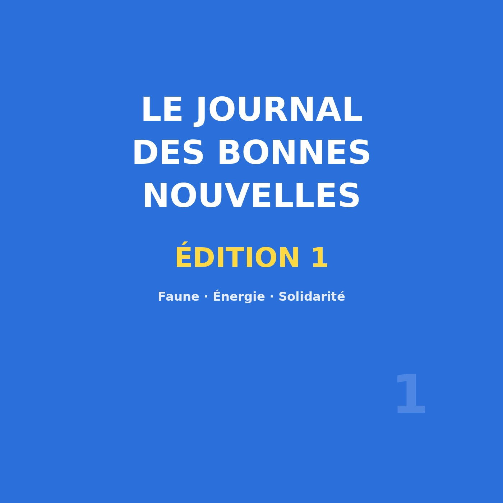
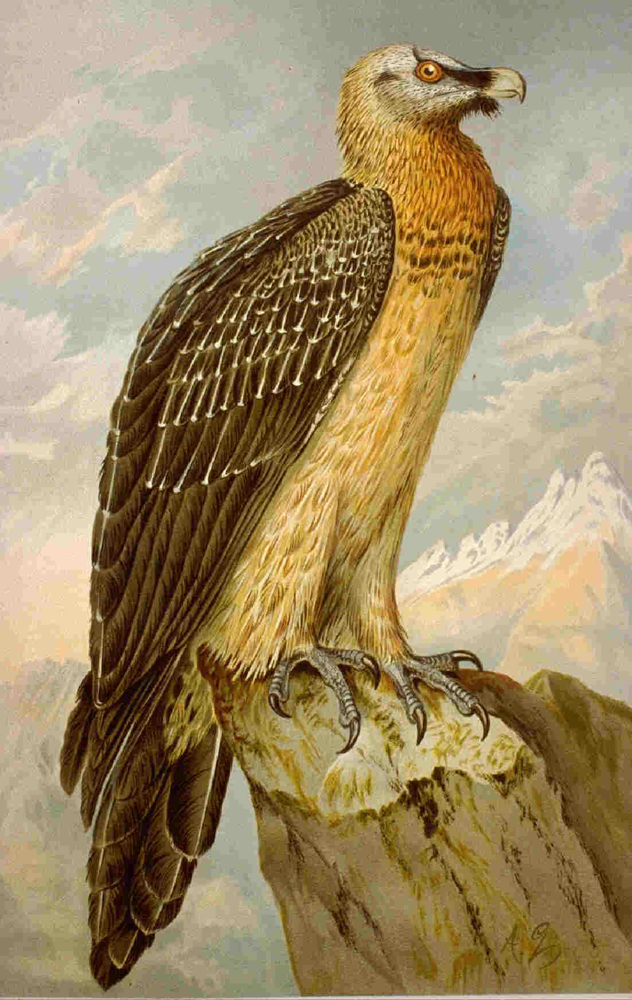

Gypaète barbu, record d'exportations d'électricité, Restos du Cœur — et la note du sourire
Œuvre de fiction radiophonique : les reporters sont fictifs, mais tous les faits évoqués sont réels, datés et sourcés.

🎧 Écoutez le journal : Le Journal des Bonnes Nouvelles — Édition 1, 11 min 22 — Écouter sur Spotify →
Le Journal des Bonnes Nouvelles est un rendez-vous hebdomadaire : chaque semaine, l'équipe part chercher les solutions et les élans de solidarité qui font avancer le monde. Loin du flux anxiogène, le journal prend l'autre côté du tableau — sans relâcher la rigueur : une bonne nouvelle n'intéresse que si elle est vérifiable.
Cette édition conduit à quatre sujets : trois reportages de terrain, puis la note du sourire. Le premier nous mène dans les montagnes, à la rencontre d'un oiseau que l'on croyait perdu ; le deuxième passe des falaises aux pylônes, pour l'électricité ; le troisième descend dans un supermarché, pour la grande collecte ; le quatrième regarde autour de lui. Un même fil les relie : rien de tout cela n'est magique, tout est le fruit de personnes qui agissent.
Le gypaète barbu est le plus grand vautour d'Europe, avec une envergure qui peut atteindre près de 2,8 mètres. Son régime est celui du « casseur d'os » : il se nourrit principalement d'os. Protégé, il est classé « en danger » par l'UICN.
Le retour se construit par réintroductions successives, dans les Alpes, la Drôme et l'Aveyron : huit jeunes gypaètes barbus réintroduits en France en 2023, quatre dans l'Aveyron, deux dans la Drôme, deux dans les Alpes. La Ligue pour la protection des oiseaux coordonne le suivi de la population nord-pyrénéenne. Les populations sont en reconstitution progressive : l'oiseau n'est pas encore sauvé, mais il reconquiert lentement ses montagnes.

De la montagne au réseau électrique, l'échelle change, mais la logique reste : des faits, et ce qu'ils signifient. Au premier semestre 2026, la France signe un record d'exportations d'électricité ; le bilan, publié le 16 juillet 2026, est clair. En parallèle, le parc solaire poursuit sa montée : au 30 juin 2026, il atteint 34,0 GW, dont +3,0 GW raccordés.
À l'échelle du continent, l'Union européenne a produit 398,8 TWh d'électricité renouvelable nouvelle — un record absolu, en hausse de +56 % en cinq ans (25 septembre 2026). En 2025, solaire et éolien ont produit à eux deux environ 30 % de l'électricité européenne, dépassant la part des fossiles (22 janvier 2026).
Direction un supermarché, un jour de collecte : des bénévoles tendent des sacs, expliquent, remercient ; les clients repartent, puis reviennent, chargés de pâtes, de conserves, de produits d'hygiène. La collecte nationale des Restos du Cœur se tient les 6, 7 et 8 mars 2026, et mobilise des bénévoles de tous âges. Fondée par Coluche en 1985, l'association porte une idée simple : que personne ne doive se coucher en ayant faim.
Quarante ans plus tard, l'aide ne se limite pas aux denrées : l'association accompagne aussi l'accès aux droits, et elle insiste sur un principe, la dignité. Concrètement, un budget est calculé avec chaque personne, de façon individualisée, selon le « reste à vivre » après les charges fixes. La solidarité n'a rien d'abstrait : elle a des mains et des cadis pleins.
Le journal se termine toujours sur sa note du sourire, consacrée aux gestes minuscules qui, sans faire la une, illuminent une journée entière. Cette semaine, un passant offre son bras à une personne âgée hésitante au bord du trottoir ; une boulangère glisse un croissant en plus dans le sac d'un enfant venu acheter le pain ; dans une salle d'attente, deux inconnus repartent presque amis.
C'est une chronique d'impressions : elle n'avance aucun chiffre, elle n'énonce aucun fait vérifiable, et c'est délibéré. Rien de tout cela ne se mesure, rien de tout cela ne se facture — et pourtant c'est là que bat le cœur d'une société. La bonne nouvelle du jour est simple : la gentillesse ordinaire n'a pas disparu. Elle est discrète, obstinée, et partout autour de nous. Il suffit parfois de décider de la regarder.
En trois reportages et une note, le journal propose une manière de lire l'actualité : non pas en triomphaliste, mais en factuel. Un oiseau qui revient parce que des décennies de patience y ont été investies ; un réseau électrique qui bascule parce que des centrales se sont installées ; une collecte qui fonctionne parce que des inconnus donnent deux heures de leur temps. Aucun de ces sujets n'est une victoire : ce sont des processus en cours.
Les éclairer sans les maquiller, rappeler que les solutions se construisent à hauteur humaine, et inviter les auditeurs à écrire : une initiative, une association, une personne qui agit près de chez eux aura peut-être sa place dans une prochaine édition. Rendez-vous la semaine prochaine, pour une nouvelle édition pleine d'espoir.
Sources : LPO · Les Énergies Renouvelables (RTE) · Radio France · JeVeuxAider.gouv.fr.